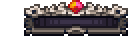
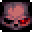
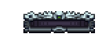
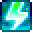
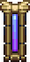
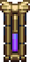
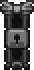

Welcome to the world of Calamity Mod! This guide will help you get started with installing and playing the mod.
Installation Steps:
- Ensure you have Terraria installed on your computer. You can get Terraria on Steam.
- Download and install tModLoader, which is required to run Calamity Mod. tModLoader can be found at tmodloader.net or on Steam as well.
- Inside the tModLoader Steam workshop (make sure you are doing this in tModLoader and not in Terraria or you wont find mods), search for Calamity Mod and click subscribe. After you click subscribe it should install automatically to tModLoader. You can also just download mods inside tModLoader.
- Launch tModLoader and navigate to the "Mods" section from the main menu.
- Find Calamity Mod in the list of installed mods and enable it by clicking the checkbox next to it.
- READ CAREFULLY: It will ask you to restart tModLoader. You do not have to restart it as it will automatically reload all enabled mods.
- After the selected mods have reloaded, you're ready to play!
Starting a New Game:
Once Calamity Mod is installed, you will have to go through the character creation process.
- From the tModLoader main menu, click on "Single Player" or "Multiplayer" depending on your preference.
- Create a new character or select an existing one.
- Create a new world or join an existing one.
- Start the game, and you will find yourself in the world of Calamity Mod!
Calamity Mod introduces new mechanics and features to enhance your Terraria experience.
New Difficulty Levels
Calamity Mod adds new difficulty levels to the game. But unlike how you select your characters difficuly level or selecting your world difficulty level, there are more that you can select when playing in the game.
If you click Escape during gameplay, you can access the Calamity difficulty selector in the top right of the inventory screen.
The difficulty options:
- Vanilla: This is the standard Terraria difficulty without any modifications.
- Revengeance: A more challenging mode with tougher enemies and bosses.
- Death Mode: The hardest difficulty level, featuring extremely difficult enemies and bosses for experienced players.
Some Calamity DLC's add more custom difficulty levels.
Rage and Adrenaline
Rage and Adrenaline are two new mechanics introduced in Calamity Mod. Rage charges up when near enemies and can be used to increase damage dealt to enemies by 20%. Adrenaline is a mechanic that increases when a boss is alive and will be set back to 0 when the player takes damage. If you are hit with a full adrenaline meter, you will take 50% less damage. but adrenaline will still be set back to 0. Adrenaline can increase damage dealt to enemies by 150%.
Rage:
Adrenaline:
you can permanently buff both meters later in game which can prove to be very useful.
To permanently buff rage and adrenaline, you have to acquire items dropped from bosses. These items include:
Rage
- Mushroom Plasma Root: Dropped by Crabulon.
- Infernal Blood: Dropped by Ravager.
- Red Lightning container: Dropped by Dragon Folly.
Adrenaline
- Electrolyte Gel Pack: Dropped by the Slime God.
- Starlight Fuel Cell: Dropped by Astrum Aureus.
- Ectoheart: Dropped by Polterghast.
Flight Meter
The flight meter is a meter like rage and adrenaline, but it is a measure of how much flight time you have left. It is a blue meter that fills up when you are flying and drains when you are not. It is a useful tool for players who want to time their flight right for bosses or for other purposes.
The flight meter technically cannot be permanently buffed, this is because it tracks your flight time and isn't a player stat. If you want to increase your flight time, you can gain better wings or other flight items.
The flight meter can look different at different times. Here are some examples of what it can look like:
- Normal Flight Meter:This is the default sprite.
- Reduced Flight Meter:This is the flight meter sprite that is shown when you have certain debuffs like Extreme Gravity, Icarus' Folly, Vulnerability Hex or weak petrification debuffs.
- Infinite Flight Meter:
.gif) This is the flight meter sprite that is shown when you have certain accessories or buffs that give you infinite flight time.
This is the flight meter sprite that is shown when you have certain accessories or buffs that give you infinite flight time.
- Disabled Flight Meter:This is the sprite that is shown when you have disabled flight.
Calamity Mod uses the same controls as vanilla Terraria, with some additional keybindings for mod-specific features.
Default Controls
- Move Left: Press the 'A' key to move left.
- Move Right: Press the 'D' key to move right.
- Jump: Press the 'W' to jump.
- Down/Drop: Press the 'S' key to move down on a rope and drop through platforms.
- Attack: Left-click to attack with your equipped weapon.
- Use Item/place/interact: Right-click to place items or interact with objects.
- Inventory/Equipment/Crafting: Press 'Esc' to open your inventory, equipment and crafting interface.
- Map: Press 'M' to open the map.
- Map Style: Press 'Tab' to cycle through map styles.
- Quick Heal: Press 'H' to quickly use a healing item.
- Quick Mana: Press 'J' to quickly use a mana item.
- Mount: Press 'R' to summon or dismiss your mount.
- Smart Cursor: Press 'Ctrl' to toggle smart cursor mode.
- Rage: Press 'V' to toggle rage mode.
- Adrenaline: Press 'B' to toggle adrenaline mode.
- Cycle Hotbar: Press '1' through '9' to cycle through your hotbars.
- Dash: Press 'F' to dash. (Recommended to disable the default dash keybinding in the game settings. this will allow you to double tap 'wasd' to dash.)
- Grapple: Press 'E' to use your grapple hook.
All keybinds are customizable in the game settings.
Calamity Mod offers various configuration options to customize your gameplay experience.
Accessing Configuration
To access the configuration options, open the game menu and go to Mod Configuration or in the main menu go to Settings>Mod Configuration. All the configuration options for all enabled mods are listed there.
No matching content found.